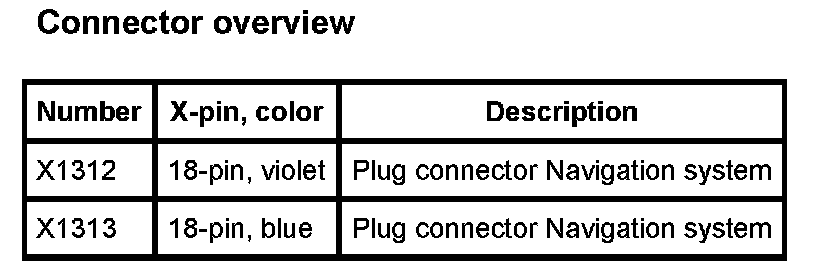

Operation CHARM
: Car repair manuals for everyone.
Home
>>
BMW
>>
2007
>>
X3 3.0si (E83) L6-3.0L (N52K)
>>
Repair and Diagnosis
>>
Accessories and Optional Equipment
>>
Navigation System
>>
Navigation Module
>>
Diagrams
>>
A112a Navigation System (X Series_X3-E83 With NAV Navigation Computer With VID Video Module)
A112a Navigation System (X Series_X3-E83 With NAV Navigation Computer With VID Video Module)
A112a Navigation System:
